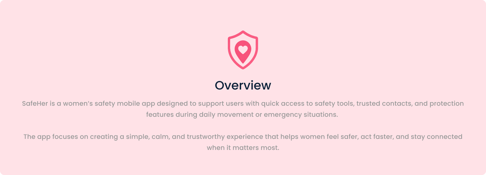
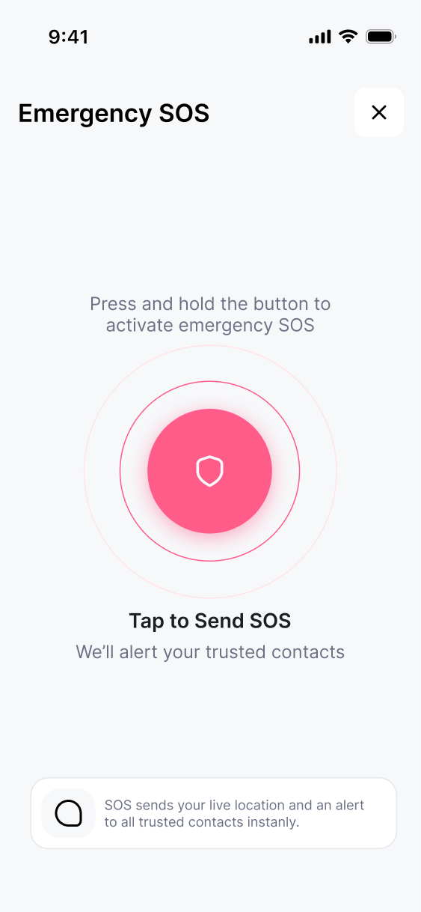
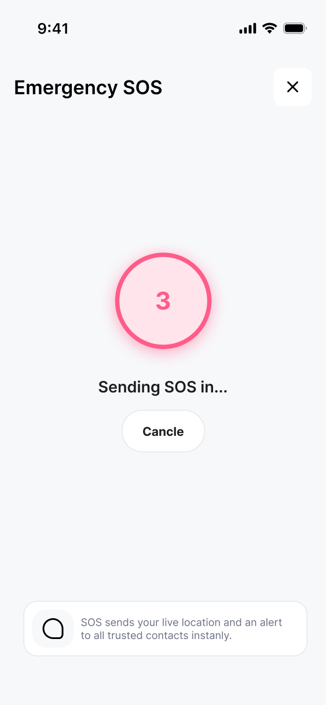
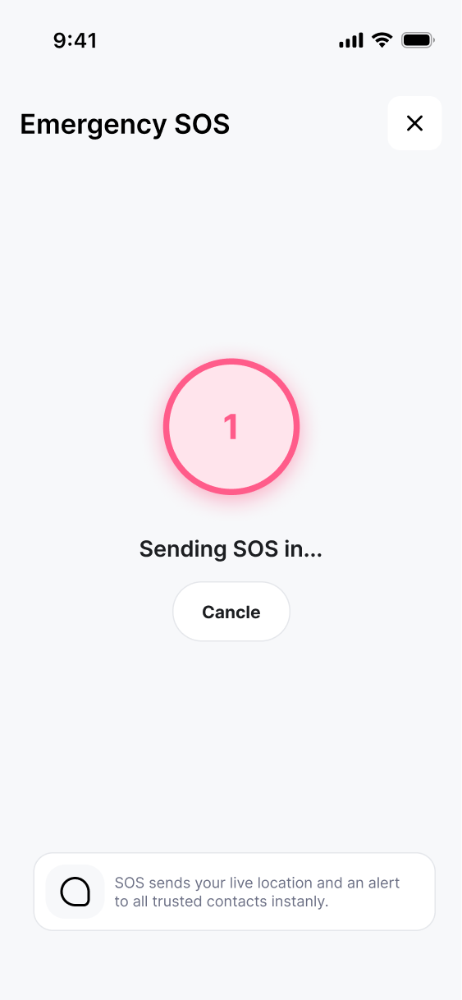
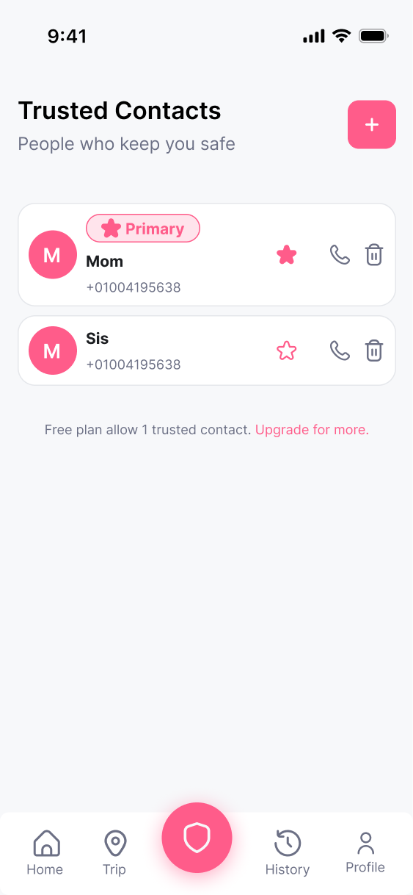
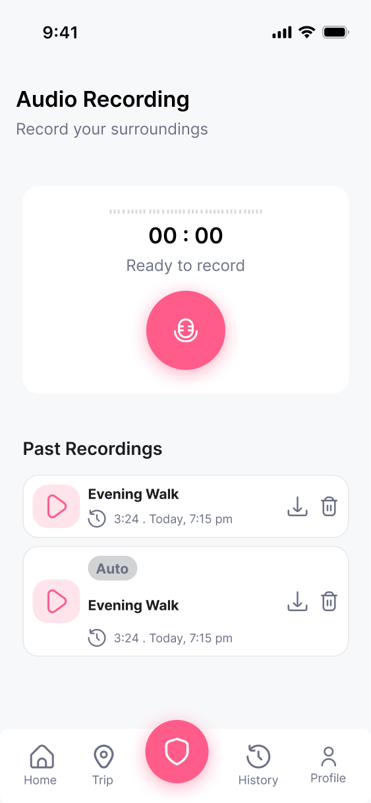
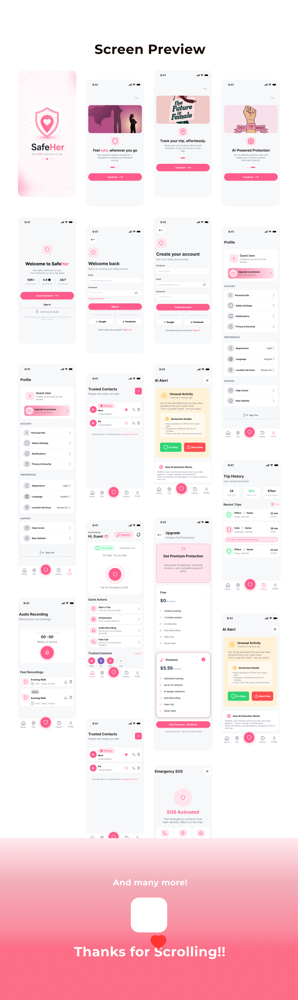
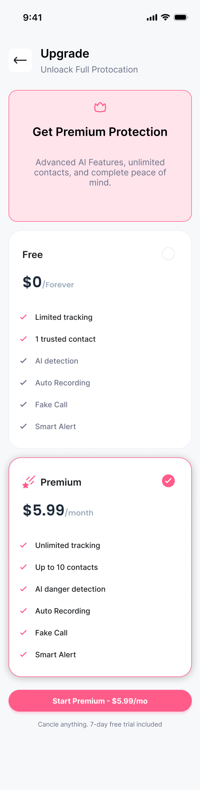
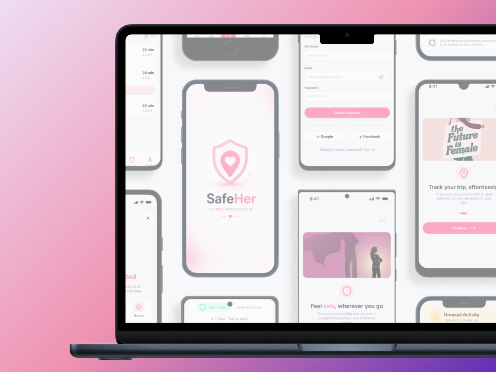

01 — UX/UI case study · mobile safety
Feel safe,
wherever you go.
Designing a safer, faster, and more supportive mobile experience for women on the go — where the right safety action is always within reach.

02 — The problem
How do you design for safety without making the user feel more anxious?
SafeHer holds several different safety tools: emergency SOS, trip tracking, AI detection, audio recording, fake call, trusted contacts. Having the tools was never the hard part.
The design problem was hierarchy: making the right action easy to find at the right moment, and keeping everything else calm.

03 — What I noticed
Four observations from the interface.
Safety has a resting state
"You're Safe · All clear" sits at the top of home, so the everyday state is reassurance, not alarm.
One button outranks everything
The SOS circle is the largest element on home, and it repeats as the centre of the tab bar on every screen.
Everyday tools are listed, not shouted
Trip, AI Detection, Audio Recording and Fake Call live in a quiet Quick Actions list below the SOS.
The network is visible, not buried in settings
Trusted contacts appear as faces on home, with Add in the same row.

Design observations from the interface — not validated research findings.
04 — Design opportunity
Make safety feel available before it becomes urgent.
One connected safety experience: critical actions immediately reachable, everyday protection calm and easy to understand, and every alert written so it lowers effort instead of raising panic.
05 — UX architecture
Not six features. One system.
Home carries the safety state and the SOS. Quick Actions branch into trip, AI, recording and fake call. Trusted contacts sit underneath all of them, and History and Profile hold what already happened and what the app is allowed to do.

06 — Safety-critical interaction
The SOS has to be instant — and cancellable.
Press and hold to activate, a three-second countdown with Cancle in reach, then a confirmation that names exactly what happened: contacts alerted, help on the way, with Call 911, Location and Record one tap away — and "I'm Safe · Cancle SOS" as the way out.

Press and hold — deliberate, so it isn't triggered by accident.

A countdown, not an instant send.

Cancel stays the only other action on screen.

Activated — what happened, and what you can do next.
Reachable from anywhere
The shield sits in the middle of the tab bar on every screen.
Hard to trigger by mistake
Hold plus countdown gives two chances to stop.
One fact per line
The footer states plainly that SOS sends live location to all trusted contacts.
07 — AI detection
An alert that checks in, instead of raising an alarm.
The alert opens with a gentle question — "This is a gentle check — are you okay?" — then gives the evidence behind it: a 400m route deviation, five minutes stopped in an unfamiliar area, later than usual commute hours.
Context first, then a binary choice: I'm Okay or Need Help. Nothing else competes.
A "How AI Detection Works" card sits below the decision, so the user can understand the system after acting — not before.

08 — Trusted contacts
"People who keep you safe."

One contact is marked Primary, and every row carries star, call and delete in the same order — so promoting, reaching or removing someone is the same gesture each time.
The plan limit is stated where it matters: "Free plan allow 1 trusted contact. Upgrade for more." — the constraint appears next to the list it constrains, not at sign-up.
Adding a contact is a single pink + in the header, the same weight as the SOS elsewhere.
09 — Trip tracking
A journey becomes a visible safety state.

From and To, estimated duration, how many contacts get notified, AI Safety Mode as a single toggle — then Start Trip, with the consequence written under the button.

History gives each trip a green or pink shield, and flags the one where SOS was triggered — the record explains itself at a glance.

10 — Audio recording: one mic button, a running timer, then past recordings with play, download and delete. Auto-captured ones are labelled "Auto".
11 — Onboarding
Three promises before any permission.
Feel safe, wherever you go → Track your trip, effortlessly → AI-Powered Protection. One illustration, one line, one Continue — and Skip always visible. Guest entry is offered too, so the product can be tried before an account exists.


12 — Design system
Soft surfaces, one loud colour.
A pink palette on near-white surfaces with dark, high-contrast text. Pink is spent on one thing per screen — the action that matters — so emergency elements stay easy to notice without the whole interface feeling urgent.

13 — Key design decisions
Five decisions the screens carry.
01
SOS is always one tap away
It's the biggest element on home and the centre of the tab bar everywhere else.
02
Urgent and everyday are separated
The emergency circle sits in its own card; the other tools are a calm list beneath it.
03
Safety status is stated, not implied
"You're Safe · Updated just now" gives the system a visible resting state.
04
Every critical action can be undone
Countdown, Cancle, and "I'm Safe" mean a mistake never becomes an emergency.
05
Calm language under pressure
Alerts explain what was noticed and offer two choices — awareness, not alarm.
14 — Product ecosystem
Everyday safety, trip protection, AI awareness, emergency response.
Profile holds the permissions the system depends on, and the premium tier extends the same features rather than introducing new ones — unlimited tracking, up to 10 contacts, AI danger detection.


Profile — safety settings, notifications, privacy and location services in one place.

Upgrade — the free plan stays usable; premium widens the same capabilities.

All screens and components organised in one Figma file for consistency and handoff.
15 — Result
From a collection of safety features to one clear safety experience.
The starting point
The design direction
The goal wasn't to make SafeHer feel more serious. It was to make safety easier to reach.